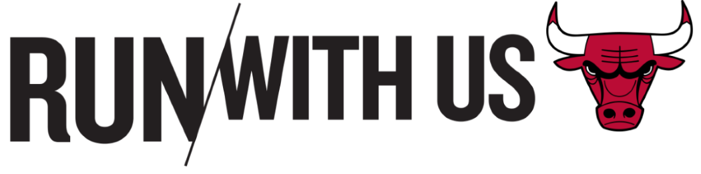

THE LAST DANCE : EPISODIO IV
Phil Jackson es la estrella del cuarto episodio de la serie documental de Michael Jordan, The Last Dance contando su historia como jugador y entrenador. Aprendemos desde sus raíces, y pasamos desde su etapa en los New York Knicks hasta como entrenador de un equipo en Puerto Rico. Denis Rodman regreso tarde de sus vacaiones, y fuera de forma en la temporada. Jordan encontró la forma de ponerlo en forma y sabían que Dennis podría estar ahí.
Se cuenta la historia de Phil Jackson, y lo importante que fue crecer en la cultura estadounidense. Los Knicks lo draftearon y fue parte de los mejores novatos en u primera temporada. Jugó 7 temporadas y ganó 3 temporadas en Nueva York.
Michael Jordan estaba acostumbrado a tener el balón en las manos, y con la estrategia de Triangulo Ofensivo, Jordan perdió mucho el balón de las manos. De inició fue frustrante, pero después fue lo ideal para aquel equipo de Chicago Bulls. Ese sistema hizo que Scottie Pippen creciera de manera impresionante.
Phil Jackson agradece que el icono mas grande del básquetbol haya aprendido a jugar en equipo por el bien de todos. Durante la primera final de conferencia de Jackson, Pippen tuvo migraña y perdieron en el juego 7, con un Scottie que declaró que no podía siquiera ver por el dolor de cabeza.
Al próximo año los jugadores comenzaron a ganar musculo y ponerse más en contra para poder enfrentar a Detroit Pistons. En ese entonces, Michael Jordan cargaba con no poder llevar a su equipo a un campeonato, y la presión que generaba.
Durante el siguiente año, los Bulls fueron invencibles, logrando vencer a los Detroit Pistons en 4 juegos en las finales de conferencia. Sin embargo, al despedirse no dieron las manos y solo abandonaron la cancha, teniendo imagen de malos perdedores. Michael Jordan lo reafirma fuertemente en el documenta
Con un Magic Johnson cubierto a cancha completa, lograron 3 victorias al hilo para poner la serie 3-1 ante Los Angeles Lakers. Los Bulls encontraron que John Paxon estaba encestando y no cubierto en el juego, con lo que dominaron el último cuarto del juego 5 y ganaron su primer campeonato. Jordan comenta que ahí entró en la misma categoría de Larry Bird y Magic Johnson.